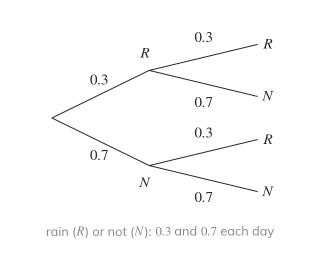

What a tree records
A tree diagram shows every outcome of a sequence of events. Each set of branches sums to
A tree diagram lists every possible outcome of a sequence of events, one branch per outcome. The probabilities on any one set of branches sum to